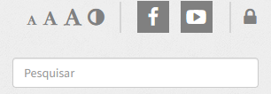
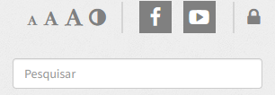
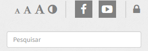
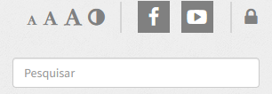

quarta-feira, 13 de setembro de 2023
Alessandra Portolan será a nova diretora-geral do campus
Estudantes e servidores do Instituto Federal Catarinense (IFC) participaram na terça-feira, 12 de setembro, do processo de consulta eleitoral para a escolha de reitor, diretores-gerais de 13 campi, representantes do Conselho Superior (Consuper) e do Conselho de Ensino, Pesquisa e Extensão (Consepe). Estavam aptos a votar 15.136 eleitores, sendo 13.404 estudantes, 891 professores e 841 técnicos administrativos em educação. Além do reitor, foram escolhidos diretores-gerais dos campi Araquari, Blumenau, Brusque, Camboriú, Concórdia, Fraiburgo, Ibirama, Luzerna, Rio do Sul, Santa Rosa do Sul, São Bento do Sul, São Francisco do Sul e Videira.
O atual diretor-geral do campus Concórdia, professor Rudinei Kock Exterckoter concorreu com outros dois candidatos e foi eleito para o cargo de reitor da Instituição, com 4570 dos 7872 votos válidos (39,07%). A professora Alessandra Portolan, candidata única à direção-geral do campus Concórdia foi eleita com 744 dos 870 votos válidos (63,88%).
Conforme resultado preliminar os mais votados para cargos de reitor e direção-geral foram:

Rudinei, eleito reitor, Alessandra, eleita diretora-geral, e Liane Vizzotto, atual diretora de Ensino
Reitor: Rudinei Kock Exterckoter
Direção-geral de campus
Araquari: Fernando José Braz
Blumenau: Aldelir Fernando Luiz
Brusque: Jéssyca Bózio Cipriano
Camboriú: Sirlei de Fátima Albino
Concórdia: Alessandra Carine Portolan
Fraiburgo: Vanderlei Cristiano Juraski
Ibirama: Douglas Hörner
Luzerna: Mario Wolfart Junior
Rio do Sul: Paula Andrea Grawieski Civiero
Santa Rosa do Sul: Cristiano Antonio Pochmann
São Bento do Sul: Alessandro Iavorski
São Francisco do Sul: Adalto Aires Parada
Videira: Manassés Ribeiro
Próximos passosConforme edital, após o prazo para recursos, o resultado final da consulta deverá ser divulgado até dia 21 de setembro e encaminhado para a validação no Consuper e, em seguida, para o Ministério da Educação (MEC). A nomeação do reitor é prerrogativa do presidente da República. A posse do novo reitor é prevista para janeiro de 2024 com mandato até 2028. Os cargos de direção-geral de campus também têm mandato de 4 anos e serão empossados pelo reitor. Os membros dos conselhos também são nomeados aos cargos pelo reitor e terão mandato de 2 anos, de 2024 até 2026.
Todo processo de consulta é coordenado pela Comissão Eleitoral Central (CEC), com apoio das comissões eleitorais locais (CELs). As informações referentes às eleições estão disponíveis na página do Consuper. Clique aqui para conferir o resultado preliminar completo na página do Consuper

[18/01/2023] ORIENTAÇÕES PARA ALUNOS INGRESSANTES NO 1° ANO DO ENSINO MÉDIO INTEGRADO 2023
[21/12/2022] ATENÇÃO - Horário Especial de atendimento da Coordenação de Registro Acadêmico e Cadastro Institucional no final de 2022 e início de 2023

Próximos eventos
Sem eventos cadastrados.

[24/08/2023] Edital nº 061 de 2023 - Processo seletivo simplificado para contratação de professor substituto de Física
[14/08/2023] Edital de seleção de servidores para ocupação dos Imóveis Funcionais desocupados e formação de lista de espera, no âmbito deste Campus.
[24/07/2023] EDITAL Nº 17/2023 - GAB/CONC - CONVOCAÇÃO E NORMAS DO PROCESSO ELEITORAL PARA ESCOLHA DOS MEMBROS DA COMISSÃO PERMANENTE DE PESSOAL DOCENTE - CPPD
[24/07/2023] EDITAL Nº 16/2023 - GAB/CONC - Abertura das inscrições para a coordenação do curso Licenciatura em Física
[21/06/2023] Edital Nº 051 de 2023 - Processo seletivo simplificado para contratação de Professor Substituto de Medicina Veterinária: Clínica Médica de Pequenos Animais
[02/06/2023] EDITAL CONSUPER Nº 01/2023 - DE CONVOCAÇÃO PARA ELEIÇÃO DAS COMISSÕES ELEITORAIS LOCAIS DOS CAMPUS, CAMPUS AVANÇADOS E REITORIA DO IFC
[25/05/2023] EDITAL Nº 14/2023 - GAB/CONC - Eleição de Coordenador de Curso - Bacharelado em Agronomia do IFC - Campus Concórdia
[02/05/2023] Processo Seletivo - Moradia estudantil masculina e feminina - Vagas Remanescentes 2023
[24/04/2023] Edital de Fluxo Contínuo - Apoio às Ações de Extensão 2023
[04/04/2023] Edital Nº 5 de 2023 - Curso de Formação Continuada - Aperfeiçoamento em doenças exóticas e emergentes em animais
Superior - Agronomia
Superior - Engenharia de Alimentos
Superior - Licenciatura em Física
Superior - Matemática - Licenciatura
Superior - Medicina Veterinária
Técnico em Agropecuária
Técnico em Alimentos
Técnico em Informática para Internet
Biblioteca
Calendário Acadêmico
Horários de Aula
Regulamento de Conduta Discente
SIGAA - Sistema Acadêmico
Lista de Telefores/Ramais
Ponto Eletrônico
Portal do professor (Sistema antigo)
SERPRO
Sigepe via Sigac
Sitema Integrado de Gestão (SIG)
CEEE - Coordenação de Extensão, Estágio e Egresso
CGE - Coordenação Geral de Ensino
CGP - Coordenação de Gestão de Pessoas
Compras/Licitações
DAP - Departamento de Administração e Planejamento
DEPE - Direção de Ensino, Pesquisa e Extensão
Patrimonio
RACI - Registro Acadêmico e Cadastro Institucional
SISAE - Serviço Integrado de Suporte e Acompanhamento Educacional